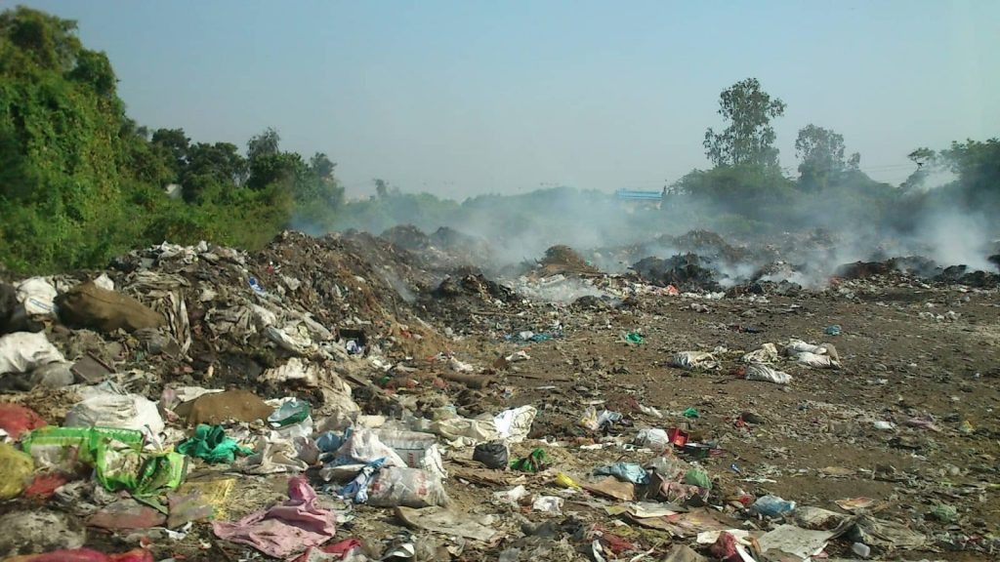

SOIL POLLUTION
People ignore this because they are not aware how ugly this can turn out in the near future, not to mention we are already victims of our own act . So first step to preventing soil polltion is by creating awareness by providing basic idea on what it is and where we are going to end up. I alone cant make a difference that matters but that doesnt mean it is not my duty.
About Us
We are Students currently pursuing B.Tech in Computer Science in Lovely Professional University.Our vision is to create awareness among others on Soil Pollution, which indeed is a grave issue that needs our high attention and involvement.We aim to create awareness by providing all the information available at our foot using this website.
Definition and Overview
Soil pollution refers to the presence of toxic chemicals, waste, or other harmful substances in soil that negatively affect plant and animal life. Pollutants can accumulate in the soil through direct dumping, agricultural runoff, industrial activities, and improper waste disposal. Contaminated soil harms not only the immediate environment but also poses long-term risks to food security, water quality, and public health.

Let's dive to understand in deep.
Causes of Soil Pollution
Agricultural Activities and Chemical Use
- Industrial Waste and Heavy Metals
- Urbanization and Construction Waste
- Improper Waste Disposal Practices
- Deforestation leads to soil erosion
- Mining and Mineral Extraction Activities
Types of Soil Pollutants Soil pollutants vary in type and toxicity, each posing specific threats:
- Heavy Metals Heavy metals such as lead, cadmium, arsenic, and mercury are toxic and persist in the soil for centuries. They inhibit plant growth, disrupt microbial activity, and can enter the food chain, affecting all levels of ecosystems.
- Pesticides and Herbicides Pesticides and herbicides, widely used in agriculture, are designed to kill pests but often end up harming beneficial soil organisms as well. These chemicals can remain in the soil for years, affecting biodiversity and soil fertility.
- Petroleum Hydrocarbons Accidental spills or leaks from oil and gas activities introduce petroleum hydrocarbons into the soil. These pollutants are difficult to break down and can cause long-term contamination, affecting soil structure and reducing oxygen levels.
- Industrial Chemicals and PCBs Industrial chemicals, including polychlorinated biphenyls (PCBs), are often released as byproducts of manufacturing processes. They are highly toxic and disrupt soil ecosystems, posing risks to animal and human health.
- Pharmaceuticals and Hormonal Disruptors
Effects of Soil Pollution
Soil pollution has numerous direct and indirect effects, impacting everything from crop yields to global climate.
- Impact on Agricultural Productivity and Food Security Polluted soil can’t support healthy crop growth, reducing agricultural productivity and leading to food shortages. Crops grown in contaminated soil may contain harmful chemicals, posing health risks to consumers.
- Contamination of Water Sources Pollutants from soil can leach into nearby water sources, contaminating rivers, lakes, and groundwater supplies. This threatens drinking water quality and disrupts aquatic ecosystems.
- Health Risks for Humans Exposure to soil pollutants, either directly through soil contact or indirectly through food and water, can lead to a range of health issues, including respiratory problems, neurological disorders, and cancer.
- Biodiversity Loss and Ecosystem Disruption Soil pollution harms organisms that live in or rely on the soil, such as insects, plants, and animals. This loss of biodiversity disrupts ecosystems, leading to an imbalance that can affect the entire food web.
- Soil Erosion and Land Degradation Polluted soil loses its structure, making it more prone to erosion and desertification. This not only degrades the land but also contributes to climate change by releasing stored carbon back into the atmosphere.
- Climate Change Implications Healthy soil sequesters carbon, playing a vital role in climate regulation. Polluted soil, however, loses this capacity, leading to increased carbon emissions and exacerbating climate change.
- Advanced Remediation Techniques Addressing soil pollution requires innovative approaches to remove or neutralize contaminants. Some of the most effective techniques include:
- Bioremediation and Microbial Solutions Bioremediation uses microbes to break down pollutants, transforming them into less harmful substances. This technique is cost-effective and environmentally friendly, particularly effective for organic pollutants like hydrocarbons.
- Phytoremediation with Plants Certain plants, such as sunflowers and poplar trees, absorb contaminants from the soil. These plants are later harvested, effectively removing pollutants from the environment. This approach is particularly useful for heavy metals and other persistent pollutants.
- Soil Washing and Chemical Treatments Soil washing involves using water or chemical solutions to flush contaminants out of the soil. This method is effective for removing metals and hydrophobic organic pollutants but requires careful management of wastewater.
- Thermal Desorption Thermal desorption heats the soil to high temperatures, vaporizing organic pollutants. The contaminants are then captured and treated, effectively reducing pollution levels in soil with volatile organic compounds.
- Electrokinetic Remediation In this method, a low electric current is applied through the soil, causing pollutants to migrate to electrodes where they can be extracted. It’s especially useful for charged particles like heavy metals.
- Nanotechnology and Biochar Use

Preventions:
- Involve local communities in land and soil management
- Improve legislation on soil pollution control and prevention
- Tighter controls on the transport, storage, and use of hazardous substances
- Permanent solutions for safe, long-term storage of nuclear waste
- Restrictions on the use of chemical pesticides and agriculture
- Incentives for organic farmers
- Bans on mining practices that release toxic dust or liquids into the environment
- Encouraging vertical cities to limit urban sprawl
- Laws to avoid food wastage, such as incentivizing companies to donate unneeded food through tax breaks
- A price on carbon to encourage industry to move away from fossil fuels and towards renewables
- Adopt waste-to-energy practices
- Conduct research on the soil environment quality baseline
- Implement soil remediation
- Control mining and industrial pollution
- Be strict when approving new uses of land
- Make companies pay for polluting
- Promote research and development
- Go organic
- Dispose of solid waste properly
- Slash the waste you produce
- Minimize chemical use
Get Involved
Join campaigns If you really care about soil pollution, why not get involved? Many groups and organizations are working on protecting the soil environment and associated issues, from groundwater safety to protecting forests and other wilderness areas.
The organizations working on these issues include:
- 1.World Wildlife Fund
- 2.Groundwater Foundation
- 3.The Nature Conservancy
- 4.The Land Institute
- 5.Asia Soil Conservation Network
- 6.African Forest Landscape Restoration Initiative
- 7.Kiss the Ground There are loads of ways you can get involved in these campaigns, depending on the amount of time and energy you’re able to give. It could be something as simple as signing a petition or sharing a campaign on social media, or you may want to become a volunteer and advocate for the cause.Image below is a picture taken from Save Soil campaign ran by sadguru to create awareness among fellow devotees visiting adiyogi in coimbotre.